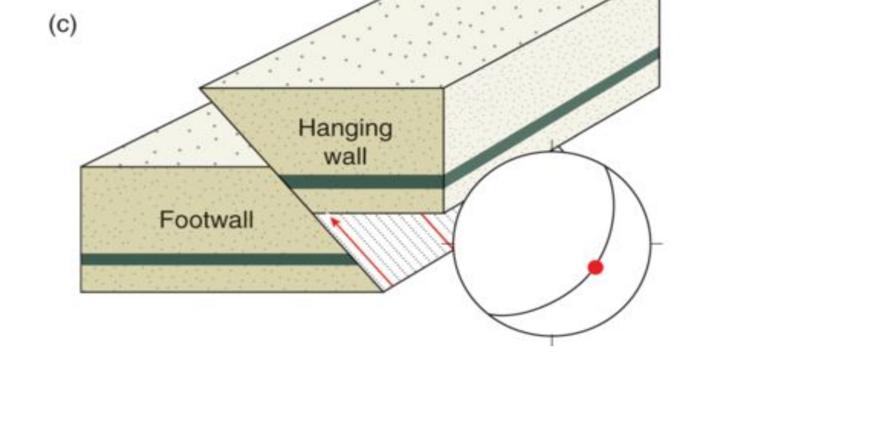

Q021: Mechanics of Contractional Faulting: Thrust vs. Reverse Fault Dip Angles
In structural geology and geodynamics, thrust faults and reverse faults are contractional dip-slip fault systems in which the hanging wall moves upward relative to the footwall, accommodating horizontal crustal shortening ($\Delta L < 0$) and vertical thickening. The orientation and dip angle ($\theta$) of these faults are governed by E.M. Anderson's (1905, 1951) dynamic theory of faulting and the Mohr-Coulomb failure criterion:
- Principal Stress Orientation: In a contractional tectonic regime (such as collisional orogenic belts like the Himalayas or Appalachian foreland), the maximum compressive principal stress ($\sigma_1$) is horizontal, intermediate stress ($\sigma_2$) is horizontal and parallel to fault strike, and the minimum principal stress ($\sigma_3$) is vertical (overburden weight).
- Theoretical Andersonian Failure Angle: According to Coulomb fracture mechanics, shear rupture planes form at an angle $\theta$ relative to $\sigma_1$: $$\theta = 45^\circ - \frac{\phi}{2}$$ Where $\phi$ is the angle of internal friction of typical crustal rocks ($\phi \approx 30^\circ$). Because $\sigma_1$ is horizontal, the theoretical dip of a newly initiated thrust fault is: $$\theta = 45^\circ - \frac{30^\circ}{2} = 45^\circ - 15^\circ = 30^\circ$$ Thus, Andersonian mechanics predicts that contractional shear planes naturally initiate with gentle dips around $30^\circ$, universally satisfying the criterion $< 45^\circ$.

In both classical and modern structural geology syllabi (Bangar, p. 202; Billings, 1972; Fossen, 2016), the dip angle of $45^\circ$ represents the formal dividing boundary between contractional fault species:
| Contractional Fault Type | Dip Angle Range ($\theta$) | Tectonic Architecture & Kinematics | Classic Geological Examples |
|---|---|---|---|
| Thrust Fault (Sensu Stricto) | $< 45^\circ$ (typically $10^\circ - 35^\circ$) | Low-angle contraction; large horizontal transport ($> 10 - 100\text{ km}$); forms nappes, klippes, and tectonic windows (fensters) | Main Boundary Thrust (MBT), Main Central Thrust (MCT) in Himalayas; Moine Thrust (Scotland) |
| Low-Angle Overthrust / Decollement | $< 10^\circ - 15^\circ$ (sub-horizontal) | Basal detachment gliding along weak evaporite/shale horizons (thin-skinned fold-and-thrust belts) | Main Frontal Thrust (MFT) / Siwalik detachment |
| High-Angle Reverse Fault | $> 45^\circ$ (typically $55^\circ - 75^\circ$) | Steep contractional slip; dominantly vertical stratigraphic offset; often reactivated steep normal faults (tectonic inversion) | Laramide basement-cored uplifts (Rocky Mountains, USA) |

Because thrust faults dip at shallow angles ($< 45^\circ$), prolonged erosion of the displaced thrust sheet (allochthon) uncovers complex geometric outcrop patterns:
- Nappe: A colossal, sheet-like allochthonous rock mass displaced horizontally tens to hundreds of kilometers along a low-angle thrust surface.
- Klippe (Plural: Klippen): An isolated, erosional remnant of the thrust sheet stranded atop younger autochthonous footwall rocks.
- Fenster (Tectonic Window): An erosional hole or window gouged through the hanging wall sheet exposing the underlying younger autochthonous rocks beneath.
| Fault Class | Kinematic Slip Type | Dip Angle ($\theta$) | Stress Regime ($\sigma_1, \sigma_2, \sigma_3$) | Tectonic Shortening / Extension |
|---|---|---|---|---|
| Thrust Fault | Hanging wall moves UP | $< 45^\circ$ (typically $\sim 30^\circ$) | $\sigma_1$ horizontal, $\sigma_2$ horizontal, $\sigma_3$ vertical | Horizontal Shortening ($\Delta L < 0$) |
| High-Angle Reverse Fault | Hanging wall moves UP | $> 45^\circ$ (typically $60^\circ - 70^\circ$) | Contractional inversion / basement uplifts | Horizontal Shortening ($\Delta L < 0$) |
| Normal Fault | Hanging wall moves DOWN | $\sim 60^\circ$ (Andersonian: $45^\circ + \phi/2$) | $\sigma_1$ vertical, $\sigma_2$ horizontal, $\sigma_3$ horizontal | Horizontal Extension ($\Delta L > 0$) |
| Strike-Slip Fault | Horizontal lateral shear | $\approx 90^\circ$ (Near-vertical) | $\sigma_1$ horizontal, $\sigma_2$ vertical, $\sigma_3$ horizontal | Conservative (no net extension or shortening) |
-
Practice Q1 (Numerical): A thrust fault dips at an angle $\theta = 30^\circ$ into a collisional mountain belt. Geodetic and seismic measurements indicate a net dip-slip displacement (slip) of $S = 5.0\text{ km}$. Calculate the horizontal crustal shortening ($\Delta L$) and vertical tectonic throw ($h$) produced by this fault.
✔ Worked Answer: Horizontal Shortening $\Delta L = 4.33\text{ km}$; Vertical Throw $h = 2.50\text{ km}$.Calculation:
$$\text{Shortening } \Delta L = S \cdot \cos\theta = 5.0 \cdot \cos 30^\circ = 5.0 \times 0.8660 = 4.33\text{ km}$$
$$\text{Vertical Throw } h = S \cdot \sin\theta = 5.0 \cdot \sin 30^\circ = 5.0 \times 0.5000 = 2.50\text{ km}$$ -
Practice Q2: What is a blind thrust fault, and why does it represent a grave seismic hazard in urban foreland regions?
✔ Correct Answer: A thrust fault that terminates underground without breaking the surface, creating an anticline fold (fault-propagation fold) above it.Explanation: Because the fault plane does not rupture the surface, it lacks a recognizable surface fault scarp, obscuring active seismic accumulation until a catastrophic earthquake occurs (e.g., 1994 Northridge, California earthquake).
-
Practice Q3: What stratigraphic diagnostic rule is universally violated when a borehole penetrates an active thrust fault?
✔ Correct Answer: Steno's Law of Superposition; the borehole encounters older rocks overlying younger rocks, and repeats stratigraphic sections.Explanation: Low-angle thrusting transports deeply buried older strata up and over younger rocks in the footwall, causing vertical repetition of layers.
-
Practice Q4: In Himalayan tectonics, name the major regional low-angle thrust fault separating the Lesser Himalayan sedimentary sequence from the Higher Himalayan Crystallines.
✔ Correct Answer: The Main Central Thrust (MCT).Explanation: The MCT is an iconic ductile shear zone and low-angle thrust dipping gently to the north, along which high-grade metamorphic rocks were thrust over low-grade Lesser Himalayan rocks.
-
Practice Q5: What is a duplex in thrust belt kinematics?
✔ Correct Answer: A stack of imbricate thrust slices (horses) bounded below by a floor thrust (sole thrust) and above by a roof thrust.Explanation: Duplexes accommodate massive crustal shortening by packing multiple lenticular thrust sheets into an overlapping shingles-like structural stack.
-
Practice Q6: What is the difference between a ramp and a flat in thin-skinned fold-and-thrust belts?
✔ Correct Answer: A flat is a bedding-parallel thrust segment in weak shale/salt; a ramp is a steeper segment cutting obliquely across competent sandstone/limestone.Explanation: Faults propagate easily along weak bedding planes (flats, $\theta \approx 0^\circ - 5^\circ$) and step upward through strong layers along ramps ($\theta \approx 30^\circ$), generating fault-bend folds.
-
Practice Q7: How does high pore fluid pressure ($u$) facilitate low-angle thrusting under Hubbert and Rubey's (1959) overthrust mechanism?
✔ Correct Answer: Pore fluid pressure reduces effective normal stress ($\sigma_n' = \sigma_n - u$), reducing frictional resistance along the fault plane to near zero.Explanation: Trapped high fluid pressures float the thrust sheet, allowing colossal nappes to glide horizontally across hundreds of kilometers without shattering.
-
Practice Q8: A tectonic window (fenster) is an erosional hole that exposes:
✔ Correct Answer: Autochthonous (younger) footwall rocks surrounded by allochthonous (older) hanging wall rocks.Explanation: Deep stream incision cuts through the allochthonous thrust sheet, opening a window to view the younger, overridden rocks underneath.